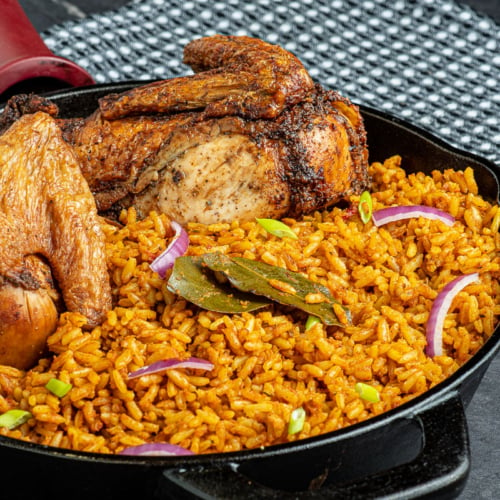

Jollof-Rice

Description
Jollof, or jollof rice, is a rice dish from West Africa. The dish is typically made with long-grain rice,
tomatoes, chilies, onions, spices, and sometimes other vegetables and/or meat in a single pot, although its
ingredients and preparation methods vary across different regions. The dish's origins trace to the Senegambian
region.
Regional variations are a source of competition between the countries of West Africa, and in particular Nigeria
and Ghana, over whose version is the best; in the 2010s this developed into a friendly rivalry known as the
"Jollof Wars". In French-speaking West Africa, a variation of the dish is known as riz au gras.
Ingredients
The ingredients for making Jollof rice vary depending on the region and cook, but the following are the most
common:
- Rice: Parboiled rice is the most common type of rice used for Jollof rice. It is a long-grain rice
that has been
partially cooked before being milled. This gives it a firmer texture and prevents it from becoming mushy
when
cooked.
- Tomatoes: Ripe, red tomatoes are essential for Jollof rice. They can be fresh, canned, or puréed.
- Tomato paste: Tomato paste adds a rich, concentrated tomato flavor to Jollof rice.
- Onions: Onions add sweetness and depth of flavor to Jollof rice.
- Red bell peppers: Red bell peppers add sweetness, color, and a mild heat to Jollof rice.
- Scotch bonnet peppers: Scotch bonnet peppers are a type of chili pepper that is very hot. They are
often used
sparingly in Jollof rice to add a bit of heat.
- Oil: Vegetable oil is the most common type of oil used for Jollof rice.
- Spices: Curry powder, thyme, and salt are the most common spices used for Jollof rice. Other
spices, such as
black pepper, paprika, and dried bay leaves, are also sometimes used.
Steps
- Rinse the rice in cold water until the water runs clear.
- Heat the oil in a large pot over medium heat. Add the onions and cook until softened, about 5 minutes.
- Add the red bell peppers and scotch bonnet peppers (if using) and cook for another 2 minutes.
- Add the tomato paste, curry powder, thyme, and salt and cook for 1 minute more.
- Add the tomatoes and stock (if using) to the pot. Bring to a boil, then reduce heat to low and simmer for 15
minutes, or until the tomatoes are soft.
- Add the rice to the pot and stir to combine. Bring to a boil, then reduce heat to low and cover. Simmer for 20
minutes, or until the rice is cooked through.
- Stir in the butter (if using) and serve.